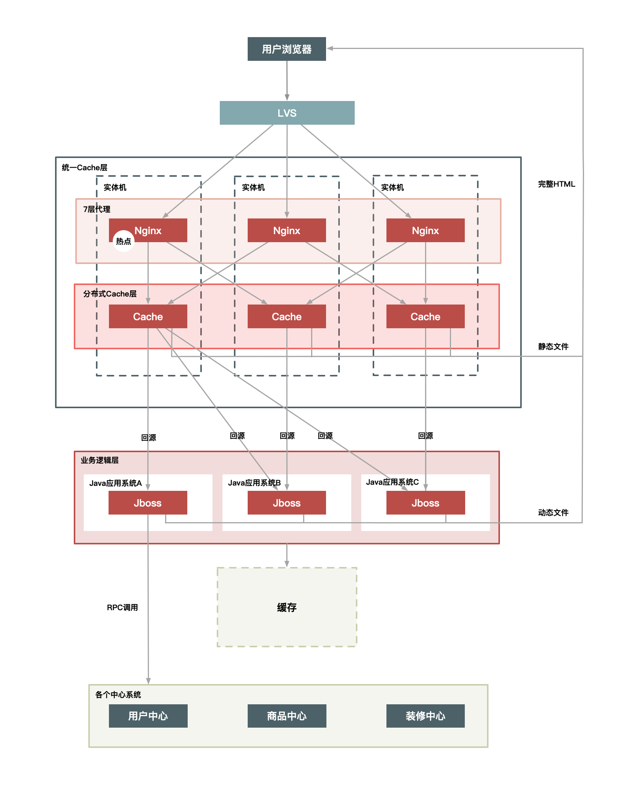

如何设计秒杀系统(上)
1.引言
秒杀系统架构设计都有哪些关键点？
秒杀其实主要解决两个问题：
- 一个是并发读
- 一个是并发写
并发读的核心优化理念是尽量减少用户到服务端来“读”数据，或者让他们读更少的数据；并发写的处理原则也一样，它要求我们在数据库层面独立出来一个库，做特殊的处理。另外，我们还要针对秒杀系统做一些保护，针对意料之外的情况设计兜底方案，以防止最坏的情况发生。
秒杀的整体架构可以概括为“稳、准、快”几个关键字。
-
所谓“稳”，就是整个系统架构要满足高可用，流量符合预期时肯定要稳定，就是超出预期时也同样不能掉链子，你要保证秒杀活动顺利完成，即秒杀商品顺利地卖出去，这个是最基本的前提。
-
然后就是“准”，就是秒杀 10 台 iPhone，那就只能成交 10 台，多一台少一台都不行。一旦库存不对，那平台就要承担损失，所以“准”就是要求保证数据的一致性。
-
最后再看“快”，“快”其实很好理解，它就是说系统的性能要足够高，否则你怎么支撑这么大的流量呢？不光是服务端要做极致的性能优化，而且在整个请求链路上都要做协同的优化，每个地方快一点，整个系统就完美了。
2. 设计秒杀系统时应该注意的5个架构原则
架构原则：“4 要 1 不要”
- 数据要尽量少
所谓“数据要尽量少”，首先是指用户请求的数据能少就少。请求的数据包括上传给系统的数据和系统返回给用户的数据（通常就是网页）。
为啥“数据要尽量少”呢？因为首先这些数据在网络上传输需要时间，其次不管是请求数据还是返回数据都需要服务器做处理，而服务器在写网络时通常都要做压缩和字符编码，这些都非常消耗 CPU，所以减少传输的数据量可以显著减少 CPU 的使用。例如，我们可以简化秒杀页面的大小，去掉不必要的页面装修效果，等等。
其次，“数据要尽量少”还要求系统依赖的数据能少就少，包括系统完成某些业务逻辑需要读取和保存的数据，这些数据一般是和后台服务以及数据库打交道的。调用其他服务会涉及数据的序列化和反序列化，而这也是 CPU 的一大杀手，同样也会增加延时。而且，数据库本身也容易成为一个瓶颈，所以和数据库打交道越少越好，数据越简单、越小则越好。
- 请求数要尽量少
用户请求的页面返回后，浏览器渲染这个页面还要包含其他的额外请求，比如说，这个页面依赖的 CSS/JavaScript、图片，以及 Ajax 请求等等都定义为“额外请求”，这些额外请求应该尽量少。因为浏览器每发出一个请求都多少会有一些消耗，例如建立连接要做三次握手，有的时候有页面依赖或者连接数限制，一些请求（例如 JavaScript）还需要串行加载等。另外，如果不同请求的域名不一样的话，还涉及这些域名的 DNS 解析，可能会耗时更久。所以你要记住的是，减少请求数可以显著减少以上这些因素导致的资源消耗。
- 路径要尽量短
所谓“路径”，就是用户发出请求到返回数据这个过程中，需求经过的中间的节点数。
通常，这些节点可以表示为一个系统或者一个新的 Socket 连接（比如代理服务器只是创建一个新的 Socket 连接来转发请求）。每经过一个节点，一般都会产生一个新的 Socket 连接。
然而，每增加一个连接都会增加新的不确定性。从概率统计上来说，假如一次请求经过 5 个节点，每个节点的可用性是 99.9% 的话，那么整个请求的可用性是：99.9% 的 5 次方，约等于 99.5%。
所以缩短请求路径不仅可以增加可用性，同样可以有效提升性能（减少中间节点可以减少数据的序列化与反序列化），并减少延时（可以减少网络传输耗时）。
要缩短访问路径有一种办法，就是多个相互强依赖的应用合并部署在一起，把远程过程调用（RPC）变成 JVM 内部之间的方法调用。
- 依赖要尽量少
所谓依赖，指的是要完成一次用户请求必须依赖的系统或者服务，这里的依赖指的是强依赖。
举个例子，比如说你要展示秒杀页面，而这个页面必须强依赖商品信息、用户信息，还有其他如优惠券、成交列表等这些对秒杀不是非要不可的信息（弱依赖），这些弱依赖在紧急情况下就可以去掉。
要减少依赖，我们可以给系统进行分级，比如 0 级系统、1 级系统、2 级系统、3 级系统，0 级系统如果是最重要的系统，那么 0 级系统强依赖的系统也同样是最重要的系统，以此类推。
注意，0 级系统要尽量减少对 1 级系统的强依赖，防止重要的系统被不重要的系统拖垮。例如支付系统是 0 级系统，而优惠券是 1 级系统的话，在极端情况下可以把优惠券给降级，防止支付系统被优惠券这个 1 级系统给拖垮。
- 不要有单点
系统中的单点可以说是系统架构上的一个大忌，因为单点意味着没有备份，风险不可控，我们设计分布式系统最重要的原则就是“消除单点”。
那如何避免单点呢？我认为关键点是避免将服务的状态和机器绑定，即把服务无状态化，这样服务就可以在机器中随意移动。
如何那把服务的状态和机器解耦呢？这里也有很多实现方式。例如把和机器相关的配置动态化，这些参数可以通过配置中心来动态推送，在服务启动时动态拉取下来，我们在这些配置中心设置一些规则来方便地改变这些映射关系。
应用无状态化是有效避免单点的一种方式，但是像存储服务本身很难无状态化，因为数据要存储在磁盘上，本身就要和机器绑定，那么这种场景一般要通过冗余多个备份的方式来解决单点问题。
3.如何才能做好动静分离？有哪些方案可选？
秒杀的场景中，对于系统的要求其实就三个字：快、准、稳。
3.1 何为动静数据
那到底什么才是动静分离呢？所谓“动静分离”，其实就是把用户请求的数据（如 HTML 页面）划分为“动态数据”和“静态数据”。
简单来说，“动态数据”和“静态数据”的主要区别就是看页面中输出的数据是否和 URL、浏览者、时间、地域相关，以及是否含有 Cookie 等私密数据。比如说：
-
很多媒体类的网站，某一篇文章的内容不管是你访问还是我访问，它都是一样的。所以它就是一个典型的静态数据，但是它是个动态页面。
-
我们如果现在访问淘宝的首页，每个人看到的页面可能都是不一样的，淘宝首页中包含了很多根据访问者特征推荐的信息，而这些个性化的数据就可以理解为动态数据了。
这里再强调一下，我们所说的静态数据，不能仅仅理解为传统意义上完全存在磁盘上的 HTML 页面，它也可能是经过 Java 系统产生的页面，但是它输出的页面本身不包含上面所说的那些因素。也就是所谓“动态”还是“静态”，并不是说数据本身是否动静，而是数据中是否含有和访问者相关的个性化数据。
还有一点要注意，就是页面中“不包含”，指的是“页面的 HTML 源码中不含有”，这一点务必要清楚。
理解了静态数据和动态数据，我估计你很容易就能想明白“动静分离”这个方案的来龙去脉了。分离了动静数据，我们就可以对分离出来的静态数据做缓存，有了缓存之后，静态数据的“访问效率”自然就提高了。
那么，怎样对静态数据做缓存呢？我在这里总结了几个重点。
第一，你应该把静态数据缓存到离用户最近的地方。静态数据就是那些相对不会变化的数据，因此我们可以把它们缓存起来。缓存到哪里呢？常见的就三种，用户浏览器里、CDN 上或者在服务端的 Cache 中。你应该根据情况，把它们尽量缓存到离用户最近的地方。
第二，静态化改造就是要直接缓存 HTTP 连接。相较于普通的数据缓存而言，你肯定还听过系统的静态化改造。静态化改造是直接缓存 HTTP 连接而不是仅仅缓存数据，如下图所示，Web 代理服务器根据请求 URL，直接取出对应的 HTTP 响应头和响应体然后直接返回，这个响应过程简单得连 HTTP 协议都不用重新组装，甚至连 HTTP 请求头也不需要解析。
{kind=link}
第三，让谁来缓存静态数据也很重要。不同语言写的 Cache 软件处理缓存数据的效率也各不相同。以 Java 为例，因为 Java 系统本身也有其弱点（比如不擅长处理大量连接请求，每个连接消耗的内存较多，Servlet 容器解析 HTTP 协议较慢），所以你可以不在 Java 层做缓存，而是直接在 Web 服务器层上做，这样你就可以屏蔽 Java 语言层面的一些弱点；而相比起来，Web 服务器（如 Nginx、Apache、Varnish）也更擅长处理大并发的静态文件请求。
3.2 如何做动静分离的改造
我以典型的商品详情系统为例来详细介绍。这里，你可以先打开京东或者淘宝的商品详情页，看看这个页面里都有哪些动静数据。我们从以下 5 个方面来分离出动态内容。
-
URL 唯一化。商品详情系统天然地就可以做到 URL 唯一化，比如每个商品都由 ID 来标识，那么 http://item.xxx.com/item.htm?id=xxxx 就可以作为唯一的 URL 标识。为啥要 URL 唯一呢？前面说了我们是要缓存整个 HTTP 连接，那么以什么作为 Key 呢？就以 URL 作为缓存的 Key，例如以 id=xxx 这个格式进行区分。
-
分离浏览者相关的因素。浏览者相关的因素包括是否已登录，以及登录身份等，这些相关因素我们可以单独拆分出来，通过动态请求来获取。
-
分离时间因素。服务端输出的时间也通过动态请求获取。
-
异步化地域因素。详情页面上与地域相关的因素做成异步方式获取，当然你也可以通过动态请求方式获取，只是这里通过异步获取更合适。
-
去掉 Cookie。服务端输出的页面包含的 Cookie 可以通过代码软件来删除，如 Web 服务器 Varnish 可以通过 unset req.http.cookie 命令去掉 Cookie。注意，这里说的去掉 Cookie 并不是用户端收到的页面就不含 Cookie 了，而是说，在缓存的静态数据中不含有 Cookie。
分离出动态内容之后，如何组织这些内容页就变得非常关键了。这里我要提醒你一点，因为这其中很多动态内容都会被页面中的其他模块用到，如判断该用户是否已登录、用户 ID 是否匹配等，所以这个时候我们应该将这些信息 JSON 化（用 JSON 格式组织这些数据），以方便前端获取。
前面我们介绍里用缓存的方式来处理静态数据。而动态内容的处理通常有两种方案：ESI（Edge Side Includes）方案和 CSI（Client Side Include）方案。
-
ESI 方案（或者 SSI）：即在 Web 代理服务器上做动态内容请求，并将请求插入到静态页面中，当用户拿到页面时已经是一个完整的页面了。这种方式对服务端性能有些影响，但是用户体验较好。
-
CSI 方案。即单独发起一个异步 JavaScript 请求，以向服务端获取动态内容。这种方式服务端性能更佳，但是用户端页面可能会延时，体验稍差。
3.3 动静分离的几种架构方案
前面我们通过改造把静态数据和动态数据做了分离，那么如何在系统架构上进一步对这些动态和静态数据重新组合，再完整地输出给用户呢？
这就涉及对用户请求路径进行合理的架构了。根据架构上的复杂度，有 3 种方案可选：
- 实体机单机部署；
- 统一 Cache 层；
- 上 CDN。
3.3.1 方案 1：实体机单机部署
这种方案是将虚拟机改为实体机，以增大 Cache 的容量，并且采用了一致性 Hash 分组的方式来提升命中率。这里将 Cache 分成若干组，是希望能达到命中率和访问热点的平衡。Hash 分组越少，缓存的命中率肯定就会越高，但短板是也会使单个商品集中在一个分组中，容易导致 Cache 被击穿，所以我们应该适当增加多个相同的分组，来平衡访问热点和命中率的问题。

实体机单机部署有以下几个优点：
- 没有网络瓶颈，而且能使用大内存；
- 既能提升命中率，又能减少 Gzip 压缩；
- 减少 Cache 失效压力，因为采用定时失效方式，例如只缓存 3 秒钟，过期即自动失效。
这个方案中，虽然把通常只需要虚拟机或者容器运行的 Java 应用换成实体机，优势很明显，它会增加单机的内存容量，但是一定程度上也造成了 CPU 的浪费，因为单个的 Java 进程很难用完整个实体机的 CPU。
另外就是，一个实体机上部署了 Java 应用又作为 Cache 来使用，这造成了运维上的高复杂度，所以这是一个折中的方案。如果你的公司里，没有更多的系统有类似需求，那么这样做也比较合适，如果你们有多个业务系统都有静态化改造的需求，那还是建议把 Cache 层单独抽出来公用比较合理。
3.3.2 方案 2：统一 Cache 层
所谓统一 Cache 层，就是将单机的 Cache 统一分离出来，形成一个单独的 Cache 集群。统一 Cache 层是个更理想的可推广方案，该方案的结构图如下：
 将 Cache 层单独拿出来统一管理可以减少运维成本，同时也方便接入其他静态化系统。此外，它还有一些优点。
{kind=link}
- 单独一个 Cache 层，可以减少多个应用接入时使用 Cache 的成本。这样接入的应用只要维护自己的 Java 系统就好，不需要单独维护 Cache，而只关心如何使用即可。
- 统一 Cache 的方案更易于维护，如后面加强监控、配置的自动化，只需要一套解决方案就行，统一起来维护升级也比较方便。
- 可以共享内存，最大化利用内存，不同系统之间的内存可以动态切换，从而能够有效应对各种攻击。
这种方案虽然维护上更方便了，但是也带来了其他一些问题，比如缓存更加集中，导致：
- Cache 层内部交换网络成为瓶颈；
- 缓存服务器的网卡也会是瓶颈；
- 机器少风险较大，挂掉一台就会影响很大一部分缓存数据。
3.3.3 方案 3：上 CDN
在将整个系统做动静分离后，我们自然会想到更进一步的方案，就是将 Cache 进一步前移到 CDN 上，因为 CDN 离用户最近，效果会更好。
但是要想这么做，有以下几个问题需要解决。
-
失效问题。前面我们也有提到过缓存时效的问题，不知道你有没有理解，我再来解释一下。谈到静态数据时，我说过一个关键词叫“相对不变”，它的言外之意是“可能会变化”。比如一篇文章，现在不变，但如果你发现个错别字，是不是就会变化了？如果你的缓存时效很长，那用户端在很长一段时间内看到的都是错的。所以，这个方案中也是，我们需要保证 CDN 可以在秒级时间内，让分布在全国各地的 Cache 同时失效，这对 CDN 的失效系统要求很高。
-
命中率问题。Cache 最重要的一个衡量指标就是“高命中率”，不然 Cache 的存在就失去了意义。同样，如果将数据全部放到全国的 CDN 上，必然导致 Cache 分散，而 Cache 分散又会导致访问请求命中同一个 Cache 的可能性降低，那么命中率就成为一个问题。
-
发布更新问题。如果一个业务系统每周都有日常业务需要发布，那么发布系统必须足够简洁高效，而且你还要考虑有问题时快速回滚和排查问题的简便性。
从前面的分析来看，将商品详情系统放到全国的所有 CDN 节点上是不太现实的，因为存在失效问题、命中率问题以及系统的发布更新问题。那么是否可以选择若干个节点来尝试实施呢？答案是“可以”，但是这样的节点需要满足几个条件：
- 靠近访问量比较集中的地区；
- 离主站相对较远；
- 节点到主站间的网络比较好，而且稳定；
- 节点容量比较大，不会占用其他 CDN 太多的资源。
最后，还有一点也很重要，那就是：节点不要太多。
基于上面几个因素，选择 CDN 的二级 Cache 比较合适，因为二级 Cache 数量偏少，容量也更大，让用户的请求先回源的 CDN 的二级 Cache 中，如果没命中再回源站获取数据，部署方式如下图所示：

除此之外，CDN 化部署方案还有以下几个特点：
- 把整个页面缓存在用户浏览器中；
- 如果强制刷新整个页面，也会请求 CDN；
- 实际有效请求，只是用户对“刷新抢宝”按钮的点击。
4.二八原则：有针对性地处理好系统的“热点数据”
假设你的系统中存储有几十亿上百亿的商品，而每天有千万级的商品被上亿的用户访问，那么肯定有一部分被大量用户访问的热卖商品，这就是我们常说的“热点商品”。
那么问题来了：这些热点对系统有啥影响，我们非要关注这些热点吗？
4.1 为什么要关注热点
我们一定要关注热点，因为热点会对系统产生一系列的影响。
首先，热点请求会大量占用服务器处理资源，虽然这个热点可能只占请求总量的亿分之一，然而却可能抢占 90% 的服务器资源，如果这个热点请求还是没有价值的无效请求，那么对系统资源来说完全是浪费。
其次，即使这些热点是有效的请求，我们也要识别出来做针对性的优化，从而用更低的代价来支撑这些热点请求。
4.2 什么是“热点”
热点分为热点操作和热点数据。所谓“热点操作”，例如大量的刷新页面、大量的添加购物车、双十一零点大量的下单等都属于此类操作。对系统来说，这些操作可以抽象为“读请求”和“写请求”，这两种热点请求的处理方式大相径庭，读请求的优化空间要大一些，而写请求的瓶颈一般都在存储层，优化的思路就是根据 CAP 理论做平衡，这个内容我在“减库存”一文再详细介绍。
而“热点数据”比较好理解，那就是用户的热点请求对应的数据。而热点数据又分为“静态热点数据”和“动态热点数据”。
所谓“静态热点数据”，就是能够提前预测的热点数据。
所谓“动态热点数据”，就是不能被提前预测到的，系统在运行过程中临时产生的热点。例如，卖家在抖音上做了广告，然后商品一下就火了，导致它在短时间内被大量购买。
由于热点操作是用户的行为，我们不好改变，但能做一些限制和保护，所以本文我主要针对热点数据来介绍如何进行优化。
4.3 发现热点数据
前面，我介绍了如何对单个秒杀商品的页面数据进行动静分离，以便针对性地对静态数据做优化处理，那么另外一个关键的问题来了：如何发现这些秒杀商品，或者更准确地说，如何发现热点商品呢？
你可能会说“参加秒杀的商品就是秒杀商品啊”，没错，关键是系统怎么知道哪些商品参加了秒杀活动呢？所以，你要有一个机制提前来区分普通商品和秒杀商品。
我们从发现静态热点和发现动态热点两个方面来看一下。
4.3.1 发现静态热点数据
如前面讲的，静态热点数据可以通过商业手段，例如强制让卖家通过报名参加的方式提前把热点商品筛选出来，实现方式是通过一个运营系统，把参加活动的商品数据进行打标，然后通过一个后台系统对这些热点商品进行预处理，如提前进行缓存。但是这种通过报名提前筛选的方式也会带来新的问题，即增加卖家的使用成本，而且实时性较差，也不太灵活。
不过，除了提前报名筛选这种方式，你还可以通过技术手段提前预测，例如对买家每天访问的商品进行大数据计算，然后统计出 TOP N 的商品，我们可以认为这些 TOP N 的商品就是热点商品。
4.3.2 发现动态热点数据
我们可以通过卖家报名或者大数据预测这些手段来提前预测静态热点数据，但这其中有一个痛点，就是实时性较差，如果我们的系统能在秒级内自动发现热点商品那就完美了。
能够动态地实时发现热点不仅对秒杀商品，对其他热卖商品也同样有价值，所以我们需要想办法实现热点的动态发现功能。
-
构建一个异步的系统，它可以收集交易链路上各个环节中的中间件产品的热点 Key，如 Nginx、缓存、RPC 服务框架等这些中间件（一些中间件产品本身已经有热点统计模块）。
-
建立一个热点上报和可以按照需求订阅的热点服务的下发规范，主要目的是通过交易链路上各个系统（包括详情、购物车、交易、优惠、库存、物流等）访问的时间差，把上游已经发现的热点透传给下游系统，提前做好保护。比如，对于大促高峰期，详情系统是最早知道的，在统一接入层上 Nginx 模块统计的热点 URL。
-
将上游系统收集的热点数据发送到热点服务台，然后下游系统（如交易系统）就会知道哪些商品会被频繁调用，然后做热点保护。
{kind=link}
我们通过部署在每台机器上的 Agent 把日志汇总到聚合和分析集群中，然后把符合一定规则的热点数据，通过订阅分发系统再推送到相应的系统中。你可以是把热点数据填充到 Cache 中，或者直接推送到应用服务器的内存中，还可以对这些数据进行拦截，总之下游系统可以订阅这些数据，然后根据自己的需求决定如何处理这些数据。
4.4 处理热点数据
处理热点数据通常有几种思路：一是优化，二是限制，三是隔离。
先来说说优化。优化热点数据最有效的办法就是缓存热点数据，如果热点数据做了动静分离，那么可以长期缓存静态数据。但是，缓存热点数据更多的是“临时”缓存，即不管是静态数据还是动态数据，都用一个队列短暂地缓存数秒钟，由于队列长度有限，可以采用 LRU 淘汰算法替换。
再来说说限制。限制更多的是一种保护机制，限制的办法也有很多，例如对被访问商品的 ID 做一致性 Hash，然后根据 Hash 做分桶，每个分桶设置一个处理队列，这样可以把热点商品限制在一个请求队列里，防止因某些热点商品占用太多的服务器资源，而使其他请求始终得不到服务器的处理资源。
最后介绍一下隔离。秒杀系统设计的第一个原则就是将这种热点数据隔离出来，不要让 1% 的请求影响到另外的 99%，隔离出来后也更方便对这 1% 的请求做针对性的优化。
具体到“秒杀”业务，我们可以在以下几个层次实现隔离。
- 业务隔离。把秒杀做成一种营销活动，卖家要参加秒杀这种营销活动需要单独报名，从技术上来说，卖家报名后对我们来说就有了已知热点，因此可以提前做好预热。
- 系统隔离。系统隔离更多的是运行时的隔离，可以通过分组部署的方式和另外 99% 分开。秒杀可以申请单独的域名，目的也是让请求落到不同的集群中。
- 数据隔离。秒杀所调用的数据大部分都是热点数据，比如会启用单独的 Cache 集群或者 MySQL 数据库来放热点数据，目的也是不想 0.01% 的数据有机会影响 99.99% 数据。
5.流量削峰这事应该怎么做？
从业务上来说，秒杀活动是希望更多的人来参与的，也就是开始之前希望有更多的人来刷页面，但是真正开始下单时，秒杀请求并不是越多越好。因此我们可以设计一些规则，让并发的请求更多地延缓，而且我们甚至可以过滤掉一些无效请求。
5.1 为什么要削峰
为什么要削峰呢？或者说峰值会带来哪些坏处？
我们知道服务器的处理资源是恒定的，你用或者不用它的处理能力都是一样的，所以出现峰值的话，很容易导致忙到处理不过来，闲的时候却又没有什么要处理。但是由于要保证服务质量，我们的很多处理资源只能按照忙的时候来预估，而这会导致资源的一个浪费。
削峰的存在意义：
- 一是可以让服务端处理变得更加平稳
- 二是可以节省服务器的资源成本。
5.2 排队
要对流量进行削峰，最容易想到的解决方案就是用消息队列来缓冲瞬时流量，把同步的直接调用转换成异步的间接推送，中间通过一个队列在一端承接瞬时的流量洪峰，在另一端平滑地将消息推送出去。在这里，消息队列就像“水库”一样， 拦蓄上游的洪水，削减进入下游河道的洪峰流量，从而达到减免洪水灾害的目的。
{kind=link}
但是，如果流量峰值持续一段时间达到了消息队列的处理上限，例如本机的消息积压达到了存储空间的上限，消息队列同样也会被压垮，这样虽然保护了下游的系统，但是和直接把请求丢弃也没多大的区别。就像遇到洪水爆发时，即使是有水库恐怕也无济于事。
除了消息队列，类似的排队方式还有很多，例如：
- 利用线程池加锁等待也是一种常用的排队方式；
- 先进先出、先进后出等常用的内存排队算法的实现方式；
- 把请求序列化到文件中，然后再顺序地读文件（例如基于 MySQL binlog 的同步机制）来恢复请求等方式。
可以看到，这些方式都有一个共同特征，就是把“一步的操作”变成“两步的操作”，其中增加的一步操作用来起到缓冲的作用。
5.3 答题
你是否还记得，最早期的秒杀只是纯粹地刷新页面和点击购买按钮，它是后来才增加了答题功能的。那么，为什么要增加答题功能呢？
这主要是为了增加购买的复杂度，从而达到两个目的。
第一个目的是防止部分买家使用秒杀器在参加秒杀时作弊。2011 年秒杀非常火的时候，秒杀器也比较猖獗，因而没有达到全民参与和营销的目的，所以系统增加了答题来限制秒杀器。
第二个目的其实就是延缓请求，起到对请求流量进行削峰的作用，从而让系统能够更好地支持瞬时的流量高峰。这个重要的功能就是把峰值的下单请求拉长，从以前的 1s 之内延长到 2s~10s。这样一来，请求峰值基于时间分片了。这个时间的分片对服务端处理并发非常重要，会大大减轻压力。而且，由于请求具有先后顺序，靠后的请求到来时自然也就没有库存了，因此根本到不了最后的下单步骤，所以真正的并发写就非常有限了。这种设计思路目前用得非常普遍，如当年支付宝的“咻一咻”、微信的“摇一摇”都是类似的方式。
这里，我重点说一下秒杀答题的设计思路。
{kind=link}
如上图所示，整个秒杀答题的逻辑主要分为 3 部分。
- 题库生成模块，这个部分主要就是生成一个个问题和答案，其实题目和答案本身并不需要很复杂，重要的是能够防止由机器来算出结果，即防止秒杀器来答题。
- 题库的推送模块，用于在秒杀答题前，把题目提前推送给详情系统和交易系统。题库的推送主要是为了保证每次用户请求的题目是唯一的，目的也是防止答题作弊。
- 题目的图片生成模块，用于把题目生成为图片格式，并且在图片里增加一些干扰因素。这也同样是为防止机器直接来答题，它要求只有人才能理解题目本身的含义。这里还要注意一点，由于答题时网络比较拥挤，我们应该把题目的图片提前推送到 CDN 上并且要进行预热，不然的话当用户真正请求题目时，图片可能加载比较慢，从而影响答题的体验。
验证的逻辑如下图所示：
{kind=link}
注意，这里面的验证逻辑，除了验证问题的答案以外，还包括用户本身身份的验证，例如是否已经登录、用户的 Cookie 是否完整、用户是否重复频繁提交等。
除了做正确性验证，我们还可以对提交答案的时间做些限制，例如从开始答题到接受答案要超过 1s，因为小于 1s 是人为操作的可能性很小，这样也能防止机器答题的情况。
5.4 分层过滤
前面介绍的排队和答题要么是少发请求，要么对发出来的请求进行缓冲，而针对秒杀场景还有一种方法，就是对请求进行分层过滤，从而过滤掉一些无效的请求。分层过滤其实就是采用“漏斗”式设计来处理请求的，如下图所示。
{kind=link}
假如请求分别经过 CDN、前台读系统（如商品详情系统）、后台系统（如交易系统）和数据库这几层，那么：
- 大部分数据和流量在用户浏览器或者 CDN 上获取，这一层可以拦截大部分数据的读取；
- 经过第二层（即前台系统）时数据（包括强一致性的数据）尽量得走 Cache，过滤一些无效的请求；
- 再到第三层后台系统，主要做数据的二次检验，对系统做好保护和限流，这样数据量和请求就进一步减少；
- 最后在数据层完成数据的强一致性校验。 这样就像漏斗一样，尽量把数据量和请求量一层一层地过滤和减少了。
分层过滤的核心思想是：在不同的层次尽可能地过滤掉无效请求，让“漏斗”最末端的才是有效请求。而要达到这种效果，我们就必须对数据做分层的校验。
分层校验的基本原则是：
- 将动态请求的读数据缓存（Cache）在 Web 端，过滤掉无效的数据读；
- 对读数据不做强一致性校验，减少因为一致性校验产生瓶颈的问题；
- 对写数据进行基于时间的合理分片，过滤掉过期的失效请求；
- 对写请求做限流保护，将超出系统承载能力的请求过滤掉；
- 对写数据进行强一致性校验，只保留最后有效的数据。
分层校验的目的是：在读系统中，尽量减少由于一致性校验带来的系统瓶颈，但是尽量将不影响性能的检查条件提前，如用户是否具有秒杀资格、商品状态是否正常、用户答题是否正确、秒杀是否已经结束、是否非法请求、营销等价物是否充足等；在写数据系统中，主要对写的数据（如“库存”）做一致性检查，最后在数据库层保证数据的最终准确性（如“库存”不能减为负数）。